Lessons from Mapping and evaluating dRTP’s contributions to computing skills and pedagogies in HE
Preliminary results
Centre for Interdisciplinary Methodologies (University of Warwick)
RSECon 2026 | Sheffield, 10th September 2026
Dr. Carlos Cámara-Menoyo (PI)
Principal Research Software Engineer, Centre for Interdisciplinary Methodologies (University of Warwick), Institute for Research Software Fellow
Dr.Timothy Monteath (Co-I)
Assistant Professor, Centre for Interdisciplinary Methodologies (University of Warwick)
Lilly Horvath-Makkos Research Assistant
The challenge: training DRCs
We are seeing a computational turn in research, as seen in a
growing number of research that relies on data or research software (Crouch et al. 2013),
adoption of computational methods by fields that didn’t traditionally use them (e.g. computational social sciences, digital humanities…)
growing importance of OpenScience and expectation to manage data and outputs following FAIR principles,
growing number of infrastructure and professionals needed for its delivery,
the advent of AI (adding a new level of complexity).
This requires a broad set of skills -Digital Research Competencies (DRC)]- that need to be learnt and taught.

So we wondered…
If training is needed, and RSEs are not doing it, who are the professionals filling this gap?
If multiple professionals are doing it: does the training differ based on their backgrounds?
And more broadly: how are DRC being delivered and what are their key defining factors?
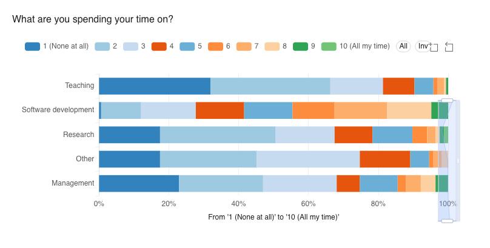
Our research
“Mapping and evaluating dRTP’s contributions to computing skills and pedagogies in Higher Education” is a project funded by the UKRI’s DisCouRSE Network+ and aims to map and analyse the provision of digital research competencies (DRC) which are led by or involve dRTP’s across Higher Education institutions in the UK.
The research acknowledges and complements existing competency frameworks like DIRECT but examines the role played by the professionals and the material conditions of training delivery instead of learning needs.
Research questions include:
How are dRTPs engaging in the teaching of Digital Research Competencies?
What are the methodologies and technologies used to deliver the training? How are decisions on training delivery made?
How is the training influenced by matters such as type of professional, career stage, background, pedagogical approaches, trends, availability, licences or teachers’ beliefs?
Are there any approaches that are more frequently used for specific audiences or cases?
This work was supported by the DisCouRSE Network+, which received funding through the UKRI Digital Research Infrastructure Programme
Methodology
Survey
People
Who are involved? What are their job titles?
How are they involved in the teaching?
Do they have any pedagogical background?
What are their beliefs in relation to tech and pedagogy? (e.g. stance as a teacher, importance of opensource, AI, licences…)
Training and pedagogies
What is being taught?
What formats and delivery mode are used?
What are the key factors influencing how the training is delivered?
Infrastructure needed
Challenges
Distribution
- Society of Research Software Engineering
- Institute for Research Software
- STEP UP
- Cake
- CHARTED
Systematic analysis
Computationally map every dRTP’s across UK HE via web-scraping
Capture dRTP role descriptions and involvement in training/teaching
Data to supplement qualitative research;
Designed to provide a broad overview of sector wide trends
However, not comprehensive! Many dRTP’s and their involvement in teach/training not on university webpages/publicly available
Systematic analysis methods
First attempt; use CommonCrawl1 as an archive of university webpages
- Roadblock, CommonCrawl was nowhere near comprehensive enough for this task!
Currently running;
Custom web scraper (politely2) works through all webpages (branching of homepage) of each UK university
Raw HTML is filtered for any potentially relevant content
Cleaned HTML passed to LLM and transformed into structured data
Preliminary Results
Survey (I)
About professionals involved in teaching
Professional categories distributions
What are the DRTPs professions involved in teaching?
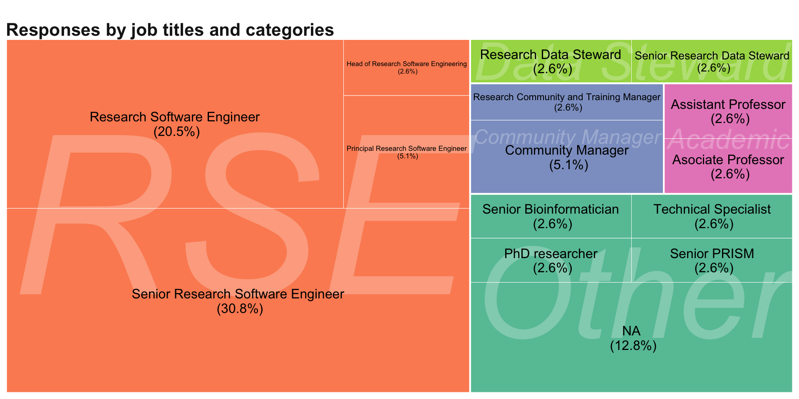
Pedagogical backgrounds
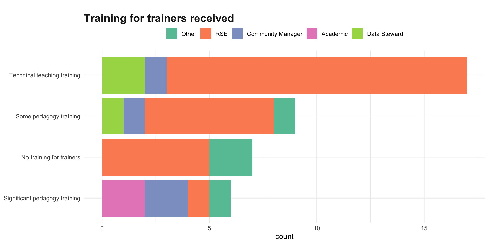
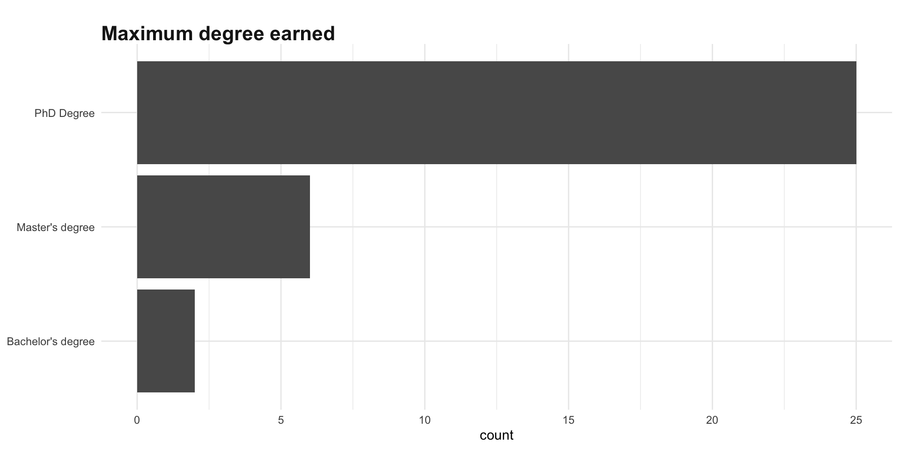
dRTPs have received extensive HE training
dRTPs are largely trained to be technical trainers (carpentries), but
- Significant amount of them have not received any training in pedagogy or training Digital Research Competencies
- Only a fraction have significant training on pedagogy (pgCERT, FHEA).
dRTPs are experts in their domains and Digital Research Competencies, but not necessarily on teaching/pedagogy
Stances in relation to tech and pedagogy
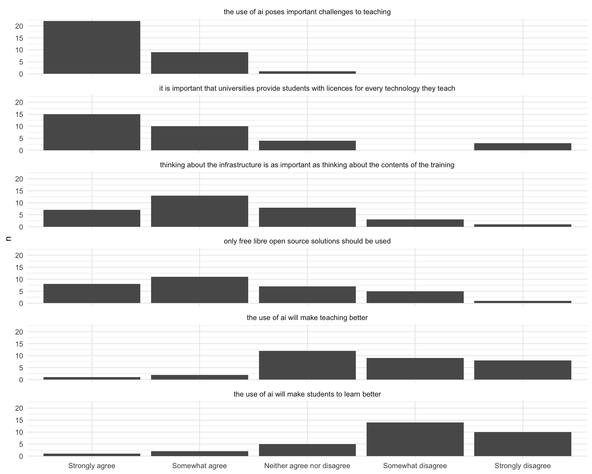
Survey (II)
About trainings
What’s being taught
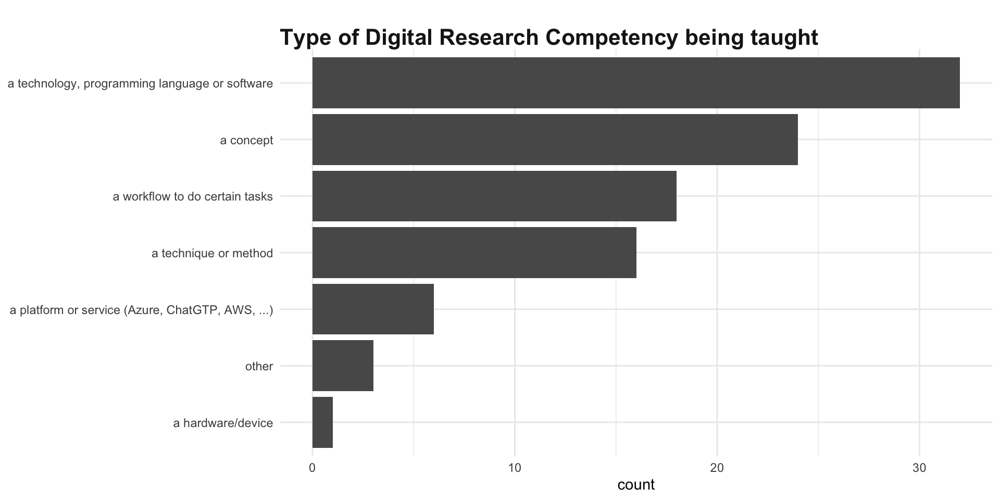
According to DIRECT Framework
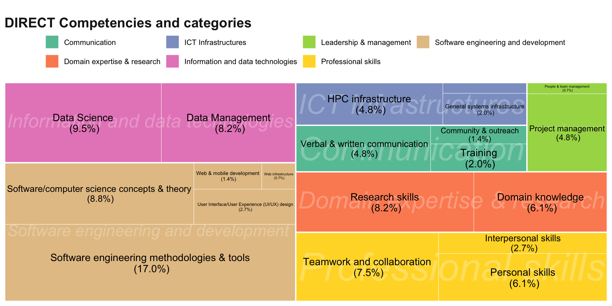
Audience
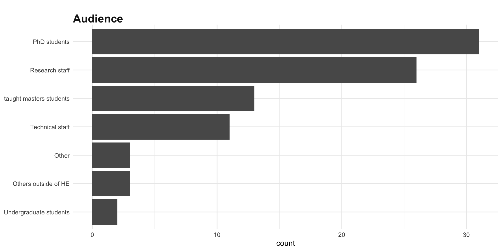
How’s being taught?
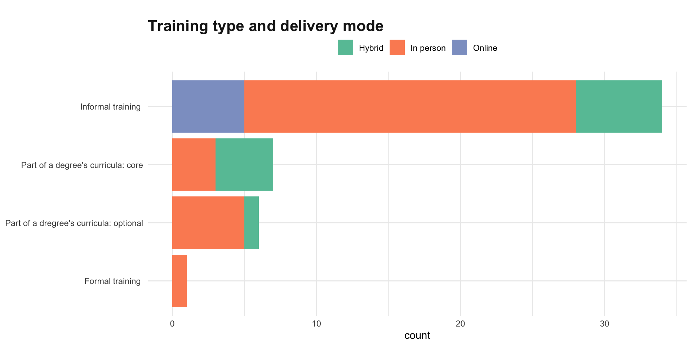
Part of a degree curricula (either UG or PG), separating between core or optional modules.
Formal (e.g. compulsory training for a job such as accessing HPC services).
Informal: any course or workshop not fiting in any previous category.
How are DRTPs involved in the teaching?
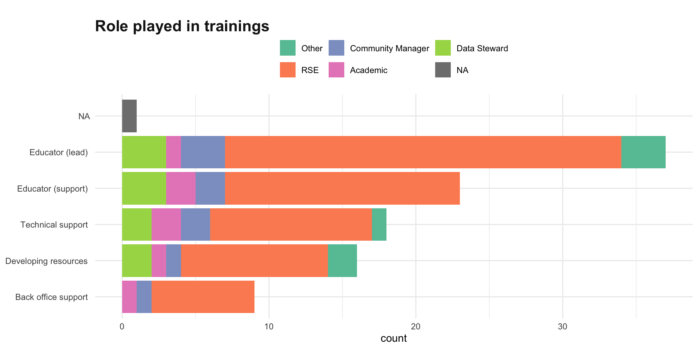
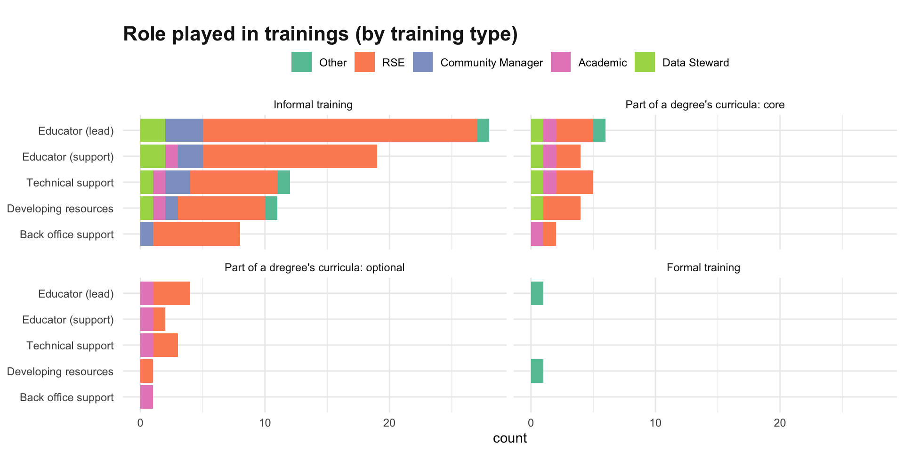
- dRTPs lead on informal training
- dRTPs are less involved in degree’s curricula, and when they are, they tend to have a supporting role
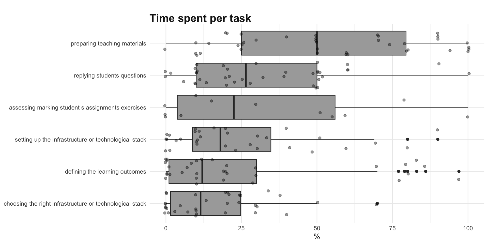
Infrastructure used
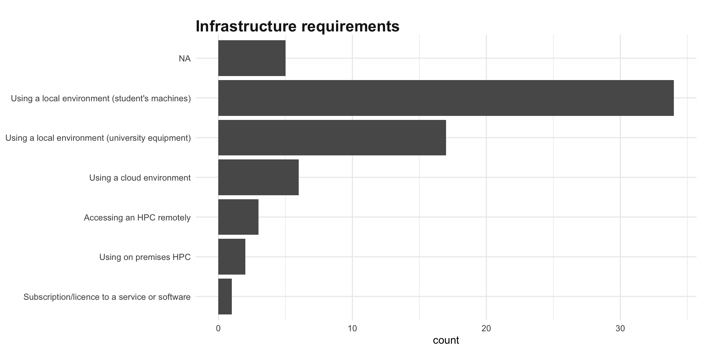
But…
Only 39 valid responses and 44 trainings. Results are not representative
We need your help!
Fill in (and share) the survey
It won’t take more than 10’ and would mean a lot to us.
Link to the survey:
Systematic audit results
Pilot at all University of Warwick’s website:
Dataset:
135 Professionals scrapped
fields:
name,job title,activities(including trainings),projects,funding sources
Currently evaluating
Clean and parse systematic analysis results
Estimate accuracy of results by comparing them against human classified data (University of Warwick)
List of every HE and Research organisations in the UK’s URLs for scraping.
Next Steps
Aim for more responses to the survey + deeper analyses (combining questions)
Open repository using FAIR principles, containing:
- datasets (survey and systematic mapping)
- report to Inform decision-making processes about designing and delivering training
Thanks!
(and please, fill in the survey!)
References
https://tinyurl.com/DRTP-training